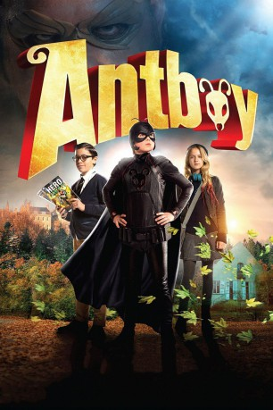

#1095 Antboy - Der Biss der Ameise
 
 IMDB-Wertung: 5.2 / 10
IMDB-Wertung: 5.2 / 10  Metascore: 0
Metascore: 0 
Pelle ist 12 Jahre alt und in der Schule ein unscheinbarer Außenseiter. Sein Leben nimmt eine überraschende Wendung, als er auf der Flucht vor den „Terror-Zwillingen“ von einer Ameise gebissen wird. Plötzlich ist Pelle bärenstark, kann Wände hochklettern, pinkelt Säure und muss unentwegt Süßes essen. Sein Klassenkamerad, der Comic-Fan Wilhelm, hat schnell durchschaut, was passiert ist: Pelle hat nun die Kräfte einer Ameise. Wie seine großen Heldenvorbilder will er von nun an als „Antboy“ die Welt beschützen. Doch mit dem Superbösewicht „Der Floh“ bekommt er einen gefährlichen Gegenspieler…
Jahr: 2013
Dauer: 77 Minuten
FSK: 0
Land: Dänemark Studio: MFA FilmdistributionTonspuren:
Untertitel:
Auflösung: 1080p (1920x1040) Größe: 5120 MB
Genre: Abenteuer, Komödie, Familie
Regisseur: Ask Hasselbalch
Drehbuch: Anders Ølholm, Kenneth Bøgh Andersen, Nikolaj Arcel, Torbjørn Rafn
Soundtrack: Peter Peter
Darsteller:
 Nicolas Bro als Dr. Gæmelkrå / Loppen
Nicolas Bro als Dr. Gæmelkrå / Loppen- Marcuz Jess Petersen als Allan
- Lærke Winther Andersen als Mor
- Thomas Voss als Carsten
- Caspar Phillipson als Hr. Sommersted
- Frank Donner als Narrator
- Nicholas Keenan als Pelle Nøhrmann / Antboy
- Hugh Lehane als The Flea
- Rick Santizo als Janitor
- Nicole Tompkins als Ida
- Inge Lise Goltermann als Police Woman , uncredited
- Michael Robdrup als Betjent , uncredited
- Oscar Dietz als Pelle Nøhrmann / Antboy
- Amalie Kruse Jensen als Ida
- Samuel Ting Graf als Wilhelm
- Cecilie Alstrup Tarp als Amanda
- Johannes Jeffries Sørensen als Mark
- Frank Thiel als Far
- Nicoline Melbye Andreassen als Lille pige
- Jonas Schmidt als Skolefotograf
- Nanna Schaumburg-Muller als Pelles lærer
- Aske Bang als Tasketyv
- Jakob B. Engmann als Skolebetjent
- Thomas Hwan als Reporter
- Elsebeth Steentoft als Fru Gæmmelkrå
- Howard Hao Thanh Bach als Dreng i skolegård
- Lisa Gro Lange Olsen als Amandas veninde 1
- Louise Munkøe als Amandas veninde 2
- Solveig Lak Møller als Amandas veninde 3
- Asha Khalid als Amandas veninde 4
- Alberte Littau Olsen als Louise
- Helena Hingebjerg als Rikke
- Kenneth Bøgh Andersen als Betjent
- Knoppers als Skipper
- Bobby DeMuro als Photographer
- Jennifer Lee Page als Female News Reporter
- Sonny Lahey als Reporter , uncredited
- Claus Thobo-Carlsen als TV narrator , uncredited
Datei: X:\Kinder Collections\Antboy\Antboy - Der Biss der Ameise (2013, FSKo.Al., 1920x1040).mkv seit 20.05.2015
Festplatte: Kinder-Filme+Trick
 Alle Filme aus Gruppe 'Kinder Collections\Antboy'
Alle Filme aus Gruppe 'Kinder Collections\Antboy'